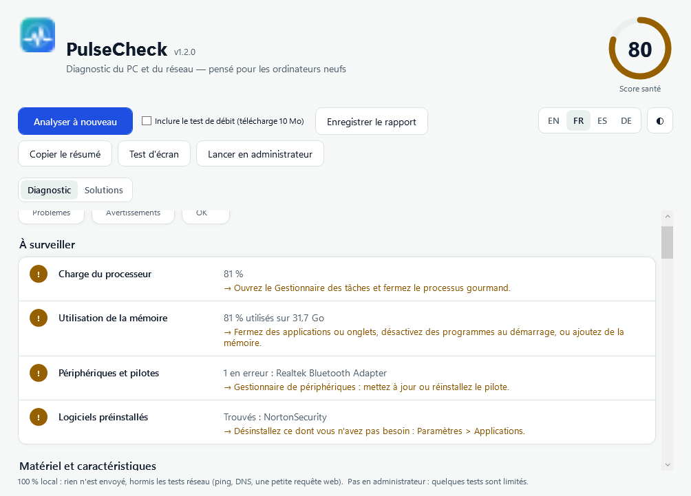
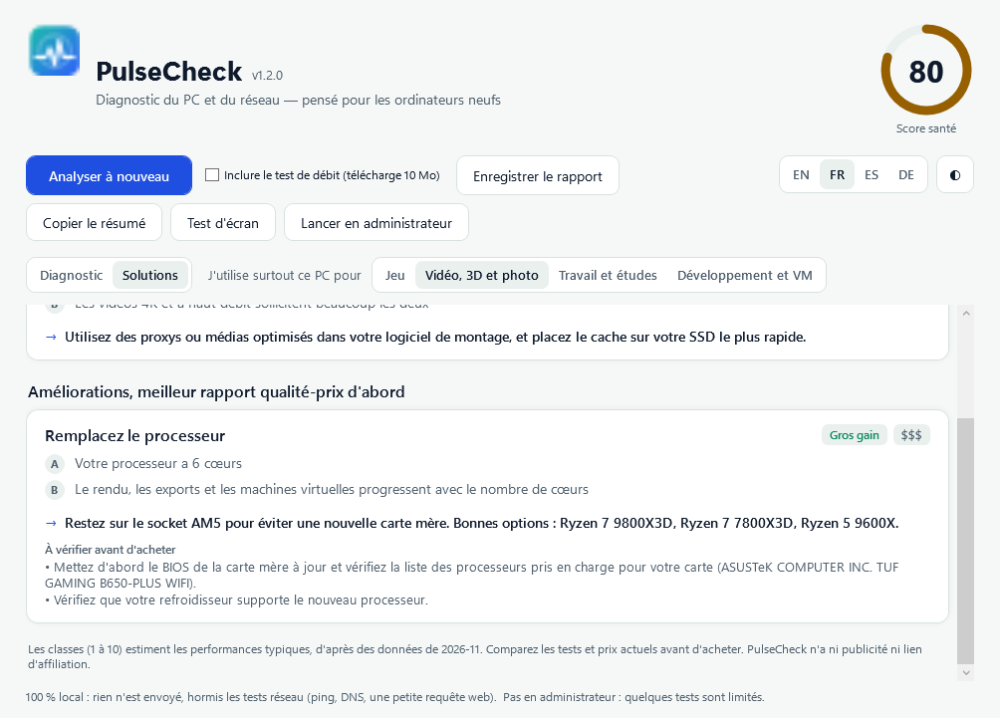

Gratuit · Open source · Windows 10 et 11
Vérifiez votre PC neuf avant la fin du délai de retour.
PulseCheck inspecte un ordinateur en une minute : vraies caractéristiques, usure de la batterie, vitesse de la mémoire, logiciels préinstallés, santé des disques, sécurité et connexion Internet. Résultats en langage clair. Rien n'est envoyé.
Score santéDeux points à regarder
- Activation de WindowsActivé
- Vitesse de la mémoire5600 MT/s, à la vitesse nominale
- Santé de la batterie18 % d'usure. Un portable neuf n'en a presque pas
- Logiciels préinstallésAntivirus d'essai et 2 applications promotionnelles
- Santé du disqueSSD, en bon état
- Routeur2 ms, 0 % de perte de paquets
Un rapport clair, dans votre langue

Une analyse, quatre domaines
Chaque résultat s'accompagne d'une solution en langage clair, d'un score santé sur 100 et d'un rapport partageable.
- Matériel
- Processeur, mémoire, carte graphique, disques, résolution et fréquence de l'écran, version du BIOS et numéro de série.
- Contrôles PC neuf
- Activation de Windows, vitesse et canaux mémoire, usure de la batterie, logiciels préinstallés, type et santé des disques.
- Santé et sécurité
- Charge processeur et mémoire, espace libre, pilotes en erreur, programmes au démarrage, Defender, pare-feu, Secure Boot, TPM, mises à jour Windows, plantages et erreurs de disque.
- Réseau
- Routeur, ping, perte de paquets, gigue, signal Wi-Fi, vitesse DNS, accès web, proxy et VPN, avec un test de débit optionnel.
Des solutions, pas seulement des problèmes
Dites à PulseCheck à quoi sert votre PC. Il compare votre matériel à votre écran et à votre usage, puis explique quoi changer, par ordre d'intérêt.
Gains rapides, gratuits
Fréquence bloquée à 60 Hz, mémoire sous sa vitesse nominale, pilote graphique ancien, trop de programmes au démarrage : réglé en quelques minutes, avec le menu exact à ouvrir.
Réglages pour votre matériel
Préréglages graphiques adaptés à votre carte et à votre écran, avec le bon upscaler (DLSS, FSR ou XeSS) et une limite d'images raisonnable.
Améliorations, expliquées A + B
Votre carte graphique (A) et votre écran 1440p 144 Hz (B) appellent une carte de classe 7. Chaque conseil montre ses raisons, une fourchette de coût et ce qu'il faut vérifier d'abord, comme l'alimentation.

Pensé pour le jour du déballage
Une annonce est difficile à vérifier et le délai de retour est court. Ces contrôles montrent si la machine correspond à ce que vous avez payé.
Usure de la batterie
Un portable vendu neuf ne doit presque pas être usé. Une batterie usée peut indiquer un appareil d'occasion ou reconditionné.
Mémoire à sa vitesse nominale
La mémoire tourne souvent plus lentement que prévu tant que XMP ou EXPO n'est pas activé dans le BIOS. Le simple canal est aussi signalé.
Logiciels préinstallés
Repère les antivirus d'essai et les applications promotionnelles, pour les retirer avant qu'ils ne ralentissent le PC.
Test de pixels morts
Des couleurs plein écran révèlent les pixels morts ou bloqués en quelques secondes, tant que l'écran peut encore être retourné.
Trouve où la connexion casse
La plupart des outils disent seulement « pas d'Internet ». PulseCheck vous dit quel maillon de la chaîne est en cause.
- Votre PCCarte réseau et adresse IP
- RouteurPing et signal Wi-Fi
- OpérateurPing vers 1.1.1.1 et 8.8.8.8
- DNSRésolution des noms et accès web
| PulseCheck constate | Cela signifie | À essayer |
|---|---|---|
| Le routeur ne répond pas | Problème local : câble, Wi-Fi ou routeur | Vérifiez le câble ou le Wi-Fi, puis redémarrez le routeur |
| Le routeur répond, pas Internet | Problème de box ou d'opérateur | Redémarrez la box 30 secondes, puis contactez votre opérateur |
| Internet fonctionne, les noms ne se résolvent pas | Problème de DNS | Passez à 1.1.1.1 ou 8.8.8.8 |
Conçu pour inspirer confiance
Vous allez lancer un programme qui lit votre PC. Vous devez pouvoir le vérifier d'abord.
Open source
Chaque ligne est publique sur GitHub sous licence MIT. Lisez-la, auditez-la, compilez-la vous-même.
Lecture seule
PulseCheck observe votre PC et propose des solutions. Il ne modifie jamais votre système.
Local par conception
Pas de compte, pas de télémétrie, rien d'envoyé. Seul le test de connexion utilise le réseau, avec les serveurs publics listés dans la politique de confidentialité.
Versions vérifiables
Chaque version est compilée par GitHub Actions à partir du code public et publiée avec une empreinte SHA-256 et une attestation de compilation signée.
Un site discret
Pas de cookies, pas d'analyse d'audience, pas de polices ni de scripts tiers sur ce site.
Télécharger PulseCheck
Un seul fichier, gratuit, sans compte.
Télécharger PulseCheck.exeWindows 10 ou 11, 64 bits · Environ 63 Mo · Rien à installer, .NET est inclus
Pour commencer
- Téléchargez le fichier et double-cliquez sur PulseCheck.exe.
- Si Windows affiche « Windows a protégé votre PC », cliquez sur Informations complémentaires, puis Exécuter quand même.
- Cliquez sur Analyser mon PC. Pour des résultats complets, choisissez Lancer en administrateur.
Pourquoi Windows m'avertit-il ?
SmartScreen avertit pour tout programme qui n'est pas encore très téléchargé ou signé numériquement. PulseCheck n'est pas encore signé. Pour en avoir la certitude, vérifiez le fichier comme indiqué à droite.
Vérifier votre téléchargement
Comparez le fichier à l'empreinte publiée sur la page de la version, et confirmez qu'il a été compilé depuis ce dépôt.
# 1. Comparez avec l'empreinte de PulseCheck.exe.sha256 sur la page de la version Get-FileHash .\PulseCheck.exe -Algorithm SHA256 # 2. Confirmez que la version vient du code public (nécessite GitHub CLI) gh attestation verify .\PulseCheck.exe --repo Brillant000/PulseCheck
Questions
Est-ce sûr ? Que transmet-il ?
Rien n'est envoyé et il n'y a aucune télémétrie. PulseCheck lit des informations sur votre PC et n'enregistre un rapport que là où vous le choisissez. Ses tests réseau contactent des serveurs publics : ping, DNS, une petite requête web et un test de débit de 10 Mo optionnel. La politique de confidentialité les liste tous.
Modifie-t-il quelque chose sur mon PC ?
Non. Il ne fait que lire et propose des solutions que vous appliquez vous-même.
Peut-il dire si un PC est d'occasion ou reconditionné ?
Il montre des indices, comme l'usure de la batterie ou une activation absente. Ce sont des indicateurs, pas des preuves.
Ai-je besoin des droits administrateur ?
Pas pour la plupart des contrôles. Choisissez Lancer en administrateur pour le contrôle TPM et quelques autres.
Est-il vraiment gratuit ?
Oui. Il est gratuit et open source sous licence MIT, sans publicité ni offre payante.
Va-t-il me dire quelle carte graphique ou quelle mémoire acheter ?
Oui. Après une analyse, l'onglet Solutions compare votre carte graphique, processeur, mémoire, disques et écran à votre usage (jeu, vidéo et 3D, travail, développement) et explique ce qui vaut la peine d'être amélioré et pourquoi. Les classes de performance sont des estimations, et il n'y a ni publicité ni lien d'affiliation : comparez les tests et prix actuels avant d'acheter.
Quelles langues sont prises en charge ?
English, Français, Español et Deutsch. D'autres peuvent être ajoutées : voir le dépôt.